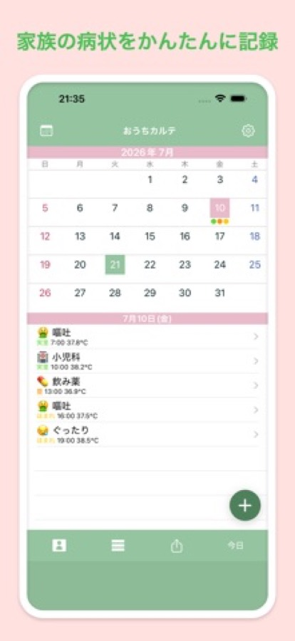
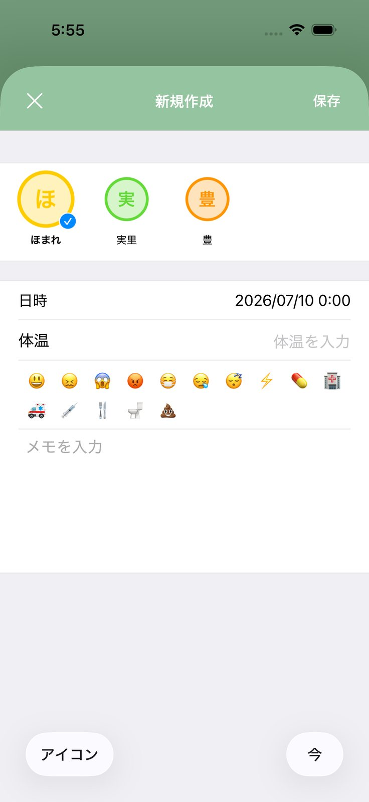
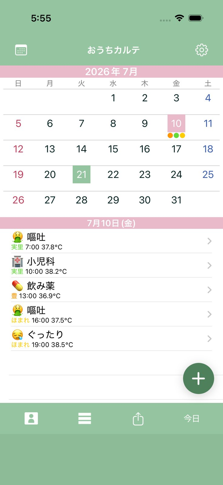
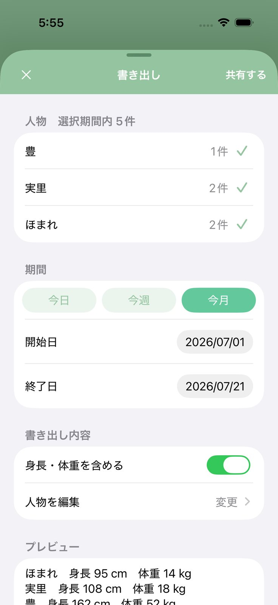

「熱はいつから出ていましたか」
「その薬は何時に飲みましたか」
——— 診察室で、思い出せなかったことはありませんか。




症状が変わったときに書き足していくだけです。診察のときは、この記録を見せながら説明できます。
処方された薬の種類と、飲んだ時間を残せます。次にいつ飲ませてよいかの判断にも使えます。
ユーザーは何人でも登録できます。子どもが複数いても、記録が混ざりません。
保存した記録は一日分をまとめて印刷できます。メールやメッセージで送ることもできます。